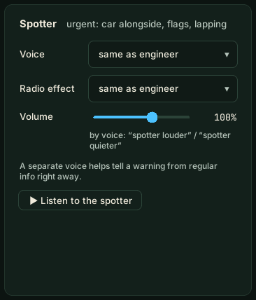
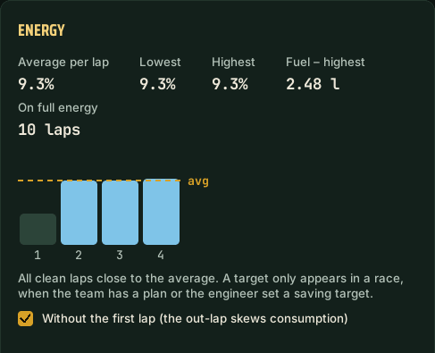
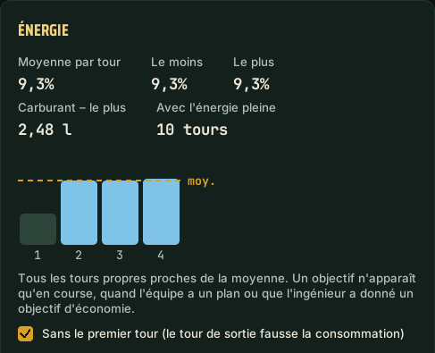
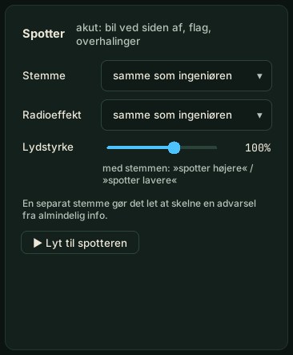

Co nowego
Zmiany w ostatnich wersjach Pit Wall Crew.
Wersja 0.4.4.10 (16.11.2026)
POPRAWKAPorsche 911 GT3 R (LMU): rady do amortyzatorów w dobrą stronę – 1 to najtwardsze, 18 najmiększe.
Wersja 0.4.4.9 (16.11.2026)
NOWEGłośność głosem: „głośniej” / „ciszej” i „spotter głośniej” / „spotter ciszej”; osobny suwak głośności spottera.

POPRAWKAAssetto Corsa: rada o ciśnieniu mówi, które koło (lewa / prawa), gdy się różnią.
Wersja 0.4.4.8 (15.11.2026)
POPRAWKAAssetto Corsa: mapka toru w raporcie z jazdy znów się pokazuje.
Wersja 0.4.4.7 (15.11.2026)
NOWERaport z jazdy, karta „Paliwo” / „Energia”: także najwięcej zużyte na jednym okrążeniu (przy energii też paliwo).

POPRAWKAPasek bez tekstu pod „Komunikaty” po pierwszym starcie nowej wersji.
Wersja 0.4.4.6 (15.11.2026)
POPRAWKAOkno nie zacina się już na chwilę przy sprawdzaniu aktualizacji po uruchomieniu.
POPRAWKAPolecenia postoju: „ciśnienie przód, o 2 w dół” z przecinkiem, poprawka w zdaniu („albo nie, lewe”) i „zatankuj do połowy”.
Wersja 0.4.4.5 (15.11.2026)
NOWEOkno: gładkie, zaokrąglone krawędzie kart, przycisków, plakietek i przełączników.

NOWEGłos z emocjami: dobre wiadomości (najlepsze okrążenie, zyskana pozycja, podium) żywiej, pilne komunikaty szybciej i głośniej.
POPRAWKAOkno: nie zacina się na chwilę przy uruchamianiu inżyniera.
POPRAWKARaport z jazdy: pozostałe karty (opony, energia, nagłówki, „Na następny stint”) też rysowane jako jeden element – raport ok. 3 razy lżejszy.
Wersja 0.4.4.4 (15.11.2026)
POPRAWKAOkno: szybszy start – strony pomocy budują się dopiero przy pierwszym otwarciu.
POPRAWKARaport z jazdy: lista zakrętów, „Popraw w jeździe” i kafelki rysowane jako jeden element – szybsze przewijanie, wybór raportu i zmiana rozmiaru okna.
Wersja 0.4.4.3 (15.11.2026)
POPRAWKAOkno: praca w oknie bez zacięć w pierwszych chwilach po starcie – raport z jazdy buduje się dopiero przy wejściu na jego stronę albo najechaniu na nią w menu.
Wersja 0.4.4.2 (14.11.2026)
POPRAWKAOkno: szybszy start – okno pokazuje się wcześniej i nie zacina się w pierwszych sekundach.
POPRAWKARaport z jazdy: płynne przewijanie, szybszy wybór raportu i zmiana rozmiaru okna.
POPRAWKA„Radio czek” działa jak „radio test”.
POPRAWKA„Coś zmienić?” i „Masz jakieś rady?” – inżynier mówi, co poprawić w jeździe.
POPRAWKA„Pit menu, opony bez zmian” ustawia pitstop bez zmiany opon.
Wersja 0.4.4.1 (14.11.2026)
POPRAWKAOkno: zmiana strony i rozmiaru bez przeskoków – strona i raport z jazdy pojawiają się od razu ułożone.
POPRAWKAPit wall: zabezpieczenie strony – dane z bazy zespołu i z linku dla obserwatorów są zawsze pokazywane jako tekst.
POPRAWKAPit wall: po „Odśwież” w „Okrążeniach” lista do porównania pokazuje nowe okrążenia.
POPRAWKAPit wall: po ponownym zalogowaniu do tego samego zespołu wraca widok zespołu zamiast ekranu logowania.
POPRAWKAPit wall: filtr sesji w „Okrążeniach” nie miesza okrążeń dwóch aut zespołu jadących naraz.
POPRAWKAPit wall: „Szybki plan” przy błędnych liczbach pokazuje komunikat zamiast zawieszać stronę.
What's new
Changes in the latest Pit Wall Crew versions.
Version 0.4.4.10 (16.11.2026)
FIXPorsche 911 GT3 R (LMU): damper advice goes the right way – 1 is the stiffest, 18 the softest.
Version 0.4.4.9 (16.11.2026)
NEWVolume by voice: “louder” / “quieter” and “spotter louder” / “spotter quieter”; a separate spotter volume slider.

FIXAssetto Corsa: pressure advice says which wheel (left / right) when they differ.
Version 0.4.4.8 (15.11.2026)
FIXAssetto Corsa: the track map in the driving report shows again.
Version 0.4.4.7 (15.11.2026)
NEWDriving report, “Fuel” / “Energy” card: also the most used on a single lap (with energy, fuel too).

FIXBlank bar under “Messages” on the first start of a new version.
Version 0.4.4.6 (15.11.2026)
FIXThe window no longer freezes briefly while checking for updates at startup.
FIXPit commands: “front pressure, 2 down” with a comma, correcting yourself mid-sentence (“no wait, left”) and “refuel to half”.
Version 0.4.4.5 (15.11.2026)
NEWWindow: smooth, rounded edges on cards, buttons, badges and switches.

NEWVoice with emotion: good news (best lap, position gained, podium) sounds livelier, urgent calls faster and louder.
FIXWindow: no longer freezes for a moment when the engineer starts.
FIXDriving report: the remaining cards (tyres, energy, headers, “For the next stint”) also drawn as one element – the report is about 3 times lighter.
Version 0.4.4.4 (15.11.2026)
FIXWindow: faster start – help pages are built only when first opened.
FIXDriving report: corner list, “Improve in your driving” and tiles drawn as one element – faster scrolling, report selection and window resizing.
Version 0.4.4.3 (15.11.2026)
FIXWindow: no more stutters in the first moments after start – the driving report is built only when you open its page or point at it in the menu.
Version 0.4.4.2 (14.11.2026)
FIXWindow: faster start – the window appears sooner and no longer stutters in the first seconds.
FIXDriving report: smooth scrolling, faster report selection and window resizing.
FIXPolish commands: „Radio czek” works like „radio test”.
FIXPolish commands: „Coś zmienić?” and „Masz jakieś rady?” – the engineer says what to improve in your driving.
FIXPolish commands: „Pit menu, opony bez zmian” sets a pit stop without a tyre change.
Version 0.4.4.1 (14.11.2026)
FIXWindow: no more jumps when switching pages or resizing – a page and the driving report appear fully laid out.
FIXPit Wall: page hardening – data from the team database and the spectator link is always shown as plain text.
FIXPit Wall: after “Refresh” in “Laps”, the comparison list shows new laps.
FIXPit Wall: signing in again to the same team brings back the team view instead of the sign-in screen.
FIXPit Wall: the session filter in “Laps” no longer mixes laps of two team cars driving at once.
FIXPit Wall: “Quick plan” shows a message for wrong numbers instead of freezing the page.
Was ist neu
Änderungen in den letzten Versionen von Pit Wall Crew.
Version 0.4.4.10 (16.11.2026)
KORREKTURPorsche 911 GT3 R (LMU): Dämpfer-Tipps in die richtige Richtung – 1 ist am härtesten, 18 am weichsten.
Version 0.4.4.9 (16.11.2026)
NEULautstärke per Stimme: „lauter“ / „leiser“ und „Spotter lauter“ / „Spotter leiser“; eigener Lautstärkeregler für den Spotter.

KORREKTURAssetto Corsa: Druckhinweis nennt das Rad (links / rechts), wenn sie sich unterscheiden.
Version 0.4.4.8 (15.11.2026)
KORREKTURAssetto Corsa: Die Streckenkarte im Fahrbericht wird wieder angezeigt.
Version 0.4.4.7 (15.11.2026)
NEUFahrbericht, Karte „Kraftstoff“ / „Energie“: auch der höchste Verbrauch auf einer Runde (bei Energie auch Kraftstoff).

KORREKTURLeerer Balken unter „Meldungen“ beim ersten Start einer neuen Version.
Version 0.4.4.6 (15.11.2026)
KORREKTURDas Fenster hängt beim Prüfen auf Updates nach dem Start nicht mehr kurz.
KORREKTURBoxenbefehle: „Druck vorne, 2 runter“ mit Komma, Korrektur im Satz („ich meine links“) und „bis zur Hälfte tanken“.
Version 0.4.4.5 (15.11.2026)
NEUFenster: glatte, abgerundete Kanten bei Karten, Schaltflächen, Plaketten und Schaltern.

NEUStimme mit Emotion: gute Nachrichten (beste Runde, gewonnene Position, Podium) lebhafter, dringende Meldungen schneller und lauter.
KORREKTURFenster: friert beim Start des Ingenieurs nicht mehr kurz ein.
KORREKTURFahrbericht: auch die übrigen Karten (Reifen, Energie, Überschriften, „Für den nächsten Stint“) als ein Element gezeichnet – der Bericht ist etwa 3-mal leichter.
Version 0.4.4.4 (15.11.2026)
KORREKTURFenster: schnellerer Start – Hilfeseiten werden erst beim ersten Öffnen aufgebaut.
KORREKTURFahrbericht: Kurvenliste, „Beim Fahren verbessern“ und Kacheln als ein Element gezeichnet – schnelleres Scrollen, Berichtsauswahl und Ändern der Fenstergröße.
Version 0.4.4.3 (15.11.2026)
KORREKTURFenster: keine Ruckler mehr in den ersten Momenten nach dem Start – der Fahrbericht wird erst aufgebaut, wenn du seine Seite öffnest oder im Menü darauf zeigst.
Version 0.4.4.2 (14.11.2026)
KORREKTURFenster: schnellerer Start – das Fenster erscheint früher und ruckelt in den ersten Sekunden nicht mehr.
KORREKTURFahrbericht: flüssiges Scrollen, schnellere Auswahl des Berichts und Änderung der Fenstergröße.
KORREKTURPolnische Befehle: „Radio czek“ funktioniert wie „radio test“.
KORREKTURPolnische Befehle: „Coś zmienić?“ und „Masz jakieś rady?“ – der Ingenieur sagt, was du beim Fahren verbessern kannst.
KORREKTURPolnische Befehle: „Pit menu, opony bez zmian“ stellt einen Boxenstopp ohne Reifenwechsel ein.
Version 0.4.4.1 (14.11.2026)
KORREKTURFenster: keine Sprünge mehr beim Seitenwechsel und beim Ändern der Größe – Seite und Fahrbericht erscheinen fertig angeordnet.
KORREKTURPit Wall: Seite abgesichert – Daten aus der Team-Datenbank und vom Zuschauer-Link werden immer als reiner Text angezeigt.
KORREKTURPit Wall: nach „Aktualisieren“ in „Runden“ zeigt die Vergleichsliste neue Runden.
KORREKTURPit Wall: nach erneutem Anmelden im selben Team erscheint wieder die Teamansicht statt des Anmeldebildschirms.
KORREKTURPit Wall: der Session-Filter in „Runden“ mischt keine Runden zweier gleichzeitig fahrender Teamautos mehr.
KORREKTURPit Wall: „Schnellplan“ zeigt bei falschen Zahlen eine Meldung, statt die Seite einzufrieren.
Nouveautés
Changements des dernières versions de Pit Wall Crew.
Version 0.4.4.10 (16.11.2026)
CORRECTIONPorsche 911 GT3 R (LMU) : conseils d’amortisseurs dans le bon sens – 1 est le plus dur, 18 le plus souple.
Version 0.4.4.9 (16.11.2026)
NOUVEAUVolume à la voix : « plus fort » / « moins fort » et « spotter plus fort » / « spotter moins fort » ; curseur de volume séparé pour le spotter.

CORRECTIONAssetto Corsa : le conseil de pression précise la roue (gauche / droite) quand elles diffèrent.
Version 0.4.4.8 (15.11.2026)
CORRECTIONAssetto Corsa : la carte du circuit s'affiche à nouveau dans le rapport de conduite.
Version 0.4.4.7 (15.11.2026)
NOUVEAURapport de conduite, carte « Carburant » / « Énergie » : aussi le maximum utilisé sur un tour (avec l'énergie, le carburant aussi).

CORRECTIONBarre vide sous « Messages » au premier lancement d'une nouvelle version.
Version 0.4.4.6 (15.11.2026)
CORRECTIONLa fenêtre ne se fige plus un instant pendant la recherche de mises à jour au démarrage.
CORRECTIONCommandes d'arrêt : « pression avant, 2 en moins » avec virgule, correction en cours de phrase (« non, gauches ») et « plein à moitié ».
Version 0.4.4.5 (15.11.2026)
NOUVEAUFenêtre : bords lisses et arrondis pour les cartes, boutons, badges et interrupteurs.

NOUVEAUVoix avec émotion : bonnes nouvelles (meilleur tour, place gagnée, podium) plus vivantes, messages urgents plus rapides et plus forts.
CORRECTIONFenêtre : ne se fige plus un instant au démarrage de l'ingénieur.
CORRECTIONRapport de conduite : les autres cartes (pneus, énergie, en-têtes, « Pour le prochain relais ») aussi dessinées en un seul élément – rapport environ 3 fois plus léger.
Version 0.4.4.4 (15.11.2026)
CORRECTIONFenêtre : démarrage plus rapide – les pages d’aide ne sont construites qu’à la première ouverture.
CORRECTIONRapport de conduite : liste des virages, « À améliorer au pilotage » et tuiles dessinés en un seul élément – défilement, choix du rapport et redimensionnement plus rapides.
Version 0.4.4.3 (15.11.2026)
CORRECTIONFenêtre : plus de saccades dans les premiers instants après le démarrage – le rapport de conduite n’est construit qu’à l’ouverture de sa page ou au survol de son entrée dans le menu.
Version 0.4.4.2 (14.11.2026)
CORRECTIONFenêtre : démarrage plus rapide – la fenêtre s'affiche plus tôt et ne saccade plus pendant les premières secondes.
CORRECTIONRapport de conduite : défilement fluide, choix du rapport et redimensionnement de la fenêtre plus rapides.
CORRECTIONCommandes en polonais : « Radio czek » fonctionne comme « radio test ».
CORRECTIONCommandes en polonais : « Coś zmienić? » et « Masz jakieś rady? » – l'ingénieur dit quoi améliorer dans ta conduite.
CORRECTIONCommandes en polonais : « Pit menu, opony bez zmian » règle un arrêt sans changement de pneus.
Version 0.4.4.1 (14.11.2026)
CORRECTIONFenêtre : plus de sauts au changement de page ou de taille – la page et le rapport de conduite s'affichent déjà mis en page.
CORRECTIONPit Wall : page sécurisée – les données de la base de l'équipe et du lien spectateurs s'affichent toujours comme du texte.
CORRECTIONPit Wall : après « Actualiser » dans « Tours », la liste de comparaison affiche les nouveaux tours.
CORRECTIONPit Wall : après une nouvelle connexion à la même équipe, la vue de l'équipe revient au lieu de l'écran de connexion.
CORRECTIONPit Wall : le filtre de session dans « Tours » ne mélange plus les tours de deux voitures de l'équipe roulant en même temps.
CORRECTIONPit Wall : « Plan rapide » affiche un message en cas de nombres erronés au lieu de bloquer la page.
Novedades
Cambios en las últimas versiones de Pit Wall Crew.
Versión 0.4.4.10 (16.11.2026)
CORRECCIÓNPorsche 911 GT3 R (LMU): consejos de amortiguadores en la dirección correcta – 1 es el más duro, 18 el más blando.
Versión 0.4.4.9 (16.11.2026)
NUEVOVolumen por voz: «más alto» / «más bajo» y «spotter más alto» / «spotter más bajo»; control de volumen propio del spotter.

CORRECCIÓNAssetto Corsa: el consejo de presión indica la rueda (izquierda / derecha) cuando difieren.
Versión 0.4.4.8 (15.11.2026)
CORRECCIÓNAssetto Corsa: el mapa del circuito vuelve a verse en el informe de conducción.
Versión 0.4.4.7 (15.11.2026)
NUEVOInforme de conducción, tarjeta «Combustible» / «Energía»: también lo máximo gastado en una vuelta (con energía, también el combustible).

CORRECCIÓNBarra vacía bajo «Mensajes» en el primer inicio de una versión nueva.
Versión 0.4.4.6 (15.11.2026)
CORRECCIÓNLa ventana ya no se congela un momento al buscar actualizaciones al iniciar.
CORRECCIÓNÓrdenes de parada: «presión delante, 2 abajo» con coma, corregirse en la frase («no, izquierdos») y «reposta hasta la mitad».
Versión 0.4.4.5 (15.11.2026)
NUEVOVentana: bordes suaves y redondeados en tarjetas, botones, etiquetas e interruptores.

NUEVOVoz con emoción: buenas noticias (mejor vuelta, posición ganada, podio) más animadas, avisos urgentes más rápidos y fuertes.
CORRECCIÓNVentana: ya no se congela un momento al iniciar el ingeniero.
CORRECCIÓNInforme de conducción: las demás tarjetas (neumáticos, energía, encabezados, «Para el próximo stint») también dibujadas como un solo elemento – el informe es unas 3 veces más ligero.
Versión 0.4.4.4 (15.11.2026)
CORRECCIÓNVentana: arranque más rápido – las páginas de ayuda se crean solo al abrirlas por primera vez.
CORRECCIÓNInforme de conducción: lista de curvas, «Mejora en la conducción» y mosaicos dibujados como un solo elemento – desplazamiento, elección del informe y cambio de tamaño más rápidos.
Versión 0.4.4.3 (15.11.2026)
CORRECCIÓNVentana: sin tirones en los primeros momentos tras el arranque – el informe de conducción se crea solo al abrir su página o al pasar el ratón por ella en el menú.
Versión 0.4.4.2 (14.11.2026)
CORRECCIÓNVentana: inicio más rápido – la ventana aparece antes y ya no da tirones en los primeros segundos.
CORRECCIÓNInforme de conducción: desplazamiento fluido, elección del informe y cambio de tamaño de la ventana más rápidos.
CORRECCIÓNÓrdenes en polaco: «Radio czek» funciona como «radio test».
CORRECCIÓNÓrdenes en polaco: «Coś zmienić?» y «Masz jakieś rady?» – el ingeniero dice qué mejorar en tu conducción.
CORRECCIÓNÓrdenes en polaco: «Pit menu, opony bez zmian» ajusta una parada sin cambio de neumáticos.
Versión 0.4.4.1 (14.11.2026)
CORRECCIÓNVentana: sin saltos al cambiar de página o de tamaño – la página y el informe de conducción aparecen ya colocados.
CORRECCIÓNPit Wall: página protegida – los datos de la base del equipo y del enlace de espectador se muestran siempre como texto.
CORRECCIÓNPit Wall: tras «Actualizar» en «Vueltas», la lista de comparación muestra las vueltas nuevas.
CORRECCIÓNPit Wall: al volver a iniciar sesión en el mismo equipo vuelve la vista del equipo en lugar de la pantalla de inicio de sesión.
CORRECCIÓNPit Wall: el filtro de sesión en «Vueltas» ya no mezcla vueltas de dos coches del equipo que ruedan a la vez.
CORRECCIÓNPit Wall: «Plan rápido» muestra un mensaje con números erróneos en lugar de bloquear la página.
Novità
Modifiche nelle ultime versioni di Pit Wall Crew.
Versione 0.4.4.10 (16.11.2026)
CORREZIONEPorsche 911 GT3 R (LMU): consigli sugli ammortizzatori nel verso giusto – 1 è il più rigido, 18 il più morbido.
Versione 0.4.4.9 (16.11.2026)
NUOVOVolume a voce: «più forte» / «più piano» e «spotter più forte» / «spotter più piano»; cursore del volume separato per lo spotter.

CORREZIONEAssetto Corsa: il consiglio sulla pressione indica la ruota (sinistra / destra) quando sono diverse.
Versione 0.4.4.8 (15.11.2026)
CORREZIONEAssetto Corsa: la mappa del circuito torna a vedersi nel rapporto di guida.
Versione 0.4.4.7 (15.11.2026)
NUOVORapporto di guida, scheda «Carburante» / «Energia»: anche il massimo consumato in un giro (con l'energia, anche il carburante).

CORREZIONEBarra vuota sotto «Messaggi» al primo avvio di una nuova versione.
Versione 0.4.4.6 (15.11.2026)
CORREZIONELa finestra non si blocca più per un attimo durante il controllo degli aggiornamenti all'avvio.
CORREZIONEComandi della sosta: «pressione davanti, 2 giù» con la virgola, correggersi nella frase («no, sinistre») e «rifornisci a metà».
Versione 0.4.4.5 (15.11.2026)
NUOVOFinestra: bordi lisci e arrotondati per schede, pulsanti, etichette e interruttori.

NUOVOVoce con emozione: buone notizie (giro migliore, posizione guadagnata, podio) più vivaci, messaggi urgenti più veloci e forti.
CORREZIONEFinestra: non si blocca più per un attimo all'avvio dell'ingegnere.
CORREZIONEReport di guida: anche le altre schede (gomme, energia, intestazioni, «Per il prossimo stint») disegnate come un unico elemento – il report è circa 3 volte più leggero.
Versione 0.4.4.4 (15.11.2026)
CORREZIONEFinestra: avvio più rapido – le pagine di aiuto vengono create solo alla prima apertura.
CORREZIONEReport di guida: elenco curve, «Migliora nella guida» e riquadri disegnati come un unico elemento – scorrimento, scelta del report e ridimensionamento più veloci.
Versione 0.4.4.3 (15.11.2026)
CORREZIONEFinestra: niente più scatti nei primi istanti dopo l’avvio – il report di guida viene creato solo quando apri la sua pagina o ci passi sopra nel menu.
Versione 0.4.4.2 (14.11.2026)
CORREZIONEFinestra: avvio più rapido – la finestra compare prima e non scatta più nei primi secondi.
CORREZIONERapporto di guida: scorrimento fluido, scelta del rapporto e ridimensionamento della finestra più rapidi.
CORREZIONEComandi in polacco: «Radio czek» funziona come «radio test».
CORREZIONEComandi in polacco: «Coś zmienić?» e «Masz jakieś rady?» – l'ingegnere dice cosa migliorare nella guida.
CORREZIONEComandi in polacco: «Pit menu, opony bez zmian» imposta una sosta senza cambio gomme.
Versione 0.4.4.1 (14.11.2026)
CORREZIONEFinestra: niente più salti al cambio di pagina o di dimensione – la pagina e il rapporto di guida compaiono già impaginati.
CORREZIONEPit Wall: pagina protetta – i dati del database della squadra e del link spettatore sono sempre mostrati come testo.
CORREZIONEPit Wall: dopo «Aggiorna» in «Giri», l'elenco di confronto mostra i giri nuovi.
CORREZIONEPit Wall: accedendo di nuovo alla stessa squadra torna la vista della squadra invece della schermata di accesso.
CORREZIONEPit Wall: il filtro sessione in «Giri» non mescola più i giri di due auto della squadra in pista insieme.
CORREZIONEPit Wall: «Piano rapido» mostra un messaggio con numeri errati invece di bloccare la pagina.
Nyheder
Ændringer i de seneste versioner af Pit Wall Crew.
Version 0.4.4.10 (16.11.2026)
RETTELSEPorsche 911 GT3 R (LMU): dæmperråd i den rigtige retning – 1 er hårdest, 18 blødest.
Version 0.4.4.9 (16.11.2026)
NYLydstyrke med stemmen: »højere« / »lavere« og »spotter højere« / »spotter lavere«; egen lydstyrkeskyder til spotteren.

RETTELSEAssetto Corsa: trykrådet siger hvilket hjul (venstre / højre), når de er forskellige.
Version 0.4.4.8 (15.11.2026)
RETTELSEAssetto Corsa: Banekortet i kørselsrapporten vises igen.
Version 0.4.4.7 (15.11.2026)
NYKørselsrapport, kortet »Brændstof« / »Energi«: også det højeste forbrug på én omgang (med energi også brændstof).

RETTELSETom bjælke under »Beskeder« ved første start af en ny version.
Version 0.4.4.6 (15.11.2026)
RETTELSEVinduet fryser ikke længere et øjeblik, mens der søges efter opdateringer ved start.
RETTELSEPitstop-kommandoer: »tryk foran, 2 ned« med komma, rettelse midt i sætningen (»nej, venstre«) og »tank halvt op«.
Version 0.4.4.5 (15.11.2026)
NYVindue: glatte, afrundede kanter på kort, knapper, mærker og kontakter.

NYStemme med følelse: gode nyheder (bedste omgang, vundet placering, podie) mere livlige, hastebeskeder hurtigere og højere.
RETTELSEVindue: fryser ikke længere et øjeblik, når ingeniøren starter.
RETTELSEKørselsrapport: de øvrige kort (dæk, energi, overskrifter, „Til næste stint“) tegnes også som ét element – rapporten er ca. 3 gange lettere.
Version 0.4.4.4 (15.11.2026)
RETTELSEVindue: hurtigere start – hjælpesiderne bygges først, når de åbnes første gang.
RETTELSEKørselsrapport: svingliste, „Forbedr i kørslen“ og felter tegnet som ét element – hurtigere rulning, valg af rapport og ændring af vinduesstørrelse.
Version 0.4.4.3 (15.11.2026)
RETTELSEVindue: ingen hak i de første øjeblikke efter start – kørselsrapporten bygges først, når du åbner dens side eller peger på den i menuen.
Version 0.4.4.2 (14.11.2026)
RETTELSEVindue: hurtigere start – vinduet vises tidligere og hakker ikke længere i de første sekunder.
RETTELSEKørerapport: jævn rulning, hurtigere valg af rapport og ændring af vinduets størrelse.
RETTELSEPolske kommandoer: »Radio czek« virker som »radio test«.
RETTELSEPolske kommandoer: »Coś zmienić?« og »Masz jakieś rady?« – ingeniøren siger, hvad du kan forbedre i kørslen.
RETTELSEPolske kommandoer: »Pit menu, opony bez zmian« indstiller et pitstop uden dækskift.
Version 0.4.4.1 (14.11.2026)
RETTELSEVindue: ingen hop ved sideskift eller ændring af størrelse – siden og kørerapporten vises færdigt opstillet.
RETTELSEPit Wall: siden er sikret – data fra teamets database og tilskuerlinket vises altid som tekst.
RETTELSEPit Wall: efter »Opdater« i »Omgange« viser sammenligningslisten nye omgange.
RETTELSEPit Wall: når du logger ind igen på samme team, vender teamvisningen tilbage i stedet for loginskærmen.
RETTELSEPit Wall: sessionsfilteret i »Omgange« blander ikke længere omgange fra to teambiler, der kører samtidig.
RETTELSEPit Wall: »Hurtig plan« viser en besked ved forkerte tal i stedet for at fryse siden.